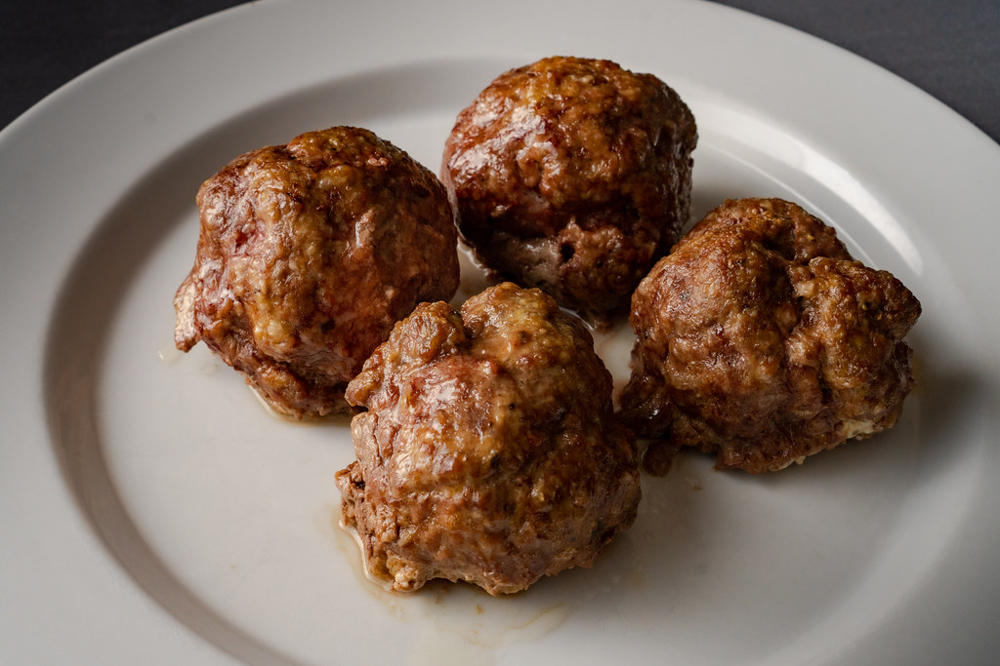

Italian Beef Meatballs

Description
These delicious and savory meatballs make any pasta dish instantly heartier! You don't even need pork!
Ingredients
- 1lb of 80/20 ground beef
- 1 large egg
- 1/3 cup of breadcrumbs, plain or italian
- 2 tsp salt
- 2 tsp pepper
- 2 tsp garlic powder
- 1 tbsp oregano, or combined italian seasoning if breadcrumbs are not seasoned
- 1/4 white onion, diced (optional)
Steps
- Preheat the oven to 400 degrees fahrenheit
- Combine every ingredient into a large mixing bowl
- Mash together with your hands (VERY MESSY!, run the faucet ahead of time to clean your hands)
- Once everything is combined consistently, form a large rectangular brick with the meat
- Divide in half, in half again, and once more in half for a total of 8 meatballs
- Coat an appropriate sized baking sheet with olive oil and position the meatballs evenly
- With the oven heated, place the pan in the middle rack
- Time for 25 minutes, and rotate the meatballs to a new side roughly every 8 minutes
- Remove and let cool for 3-5 minutes, or alternatively place in your favorite red sauce